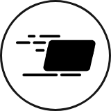
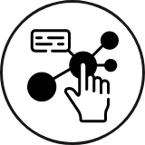
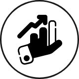
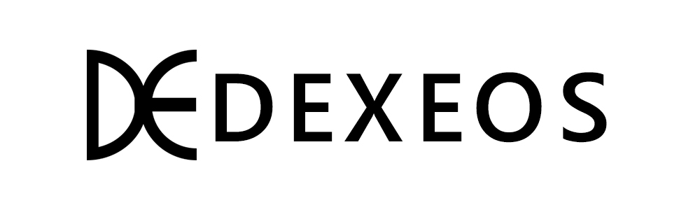
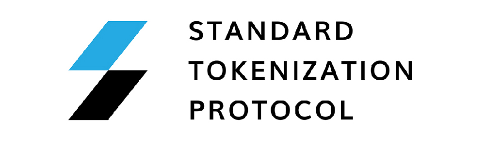

What is RAI Finance?
RAI Finance is a protocol designed to provide DeFi with a wider range of assets, a higher amount of liquidity, and a diverse set of financial use cases. When this feature set is combined with the cross-chain compatibility of the Polkadot ecosystem, it eliminates fragmentation across the existing DeFi ecosystem by bringing a complement of new assets and a higher amount of liquidity to decentralized finance.
The Current DEX Ecosystem
-

Unsustainable Network Fee
-
 
Dependent on Single Base Layer Protocol
-
Lack of Diversity Among Asset Types
Features
-
Secure Off-chain Transactions
RAI Finance improves the scalability of automated market making and yield strategies through secure off-chain transactions. By leveraging Zero-knowledge Proofs for trustless computation and cryptographic accumulators for immutable data storage, it is possible to provide a layer 2 solution that supports scalability, transparency, and privacy in transactions.
-
Cross-chain Asset Capability
In order to reach a wider variety of asset types, Rai Finance will be launched on a parachain and integrated into the Polkadot ecosystem. This allows the protocol to increase the number of assets supported by utilizing the cross-chain compatibility of the Polkadot relay chain.
What are RAI Finance Pools?
-
Automated Market-Making Variability
RAI Finance liquidity pools can manage a variety of automated market-making (AMM) services to provide liquidity to different digital markets, with the objective being to choose automated market-making algorithms to maximize revenue for different asset pairs.
-
Constant Function Market-Makers
RAI Finance will support multiple Constant Function Market-Makers(CFMM), similar to Uniswap, Balancer, and Curve.
-
Logarithmic Market Scoring Rule (LMSR)
Introduced first by Hanson in the late 90s/early 2000, the LMSR gives a scoring rule for prediction markets. RAI Finance protocol will provide an AMM optimized for the different relationships between asset pairs. Algorithm flexibility is essential to maximize profits and minimize the risk of liquidity providers while securing more assets for users to trade efficiently
Unique Assets
RAI Finance is designed to support the creation of unique assets that do not cur- rently exist in the liquidity pools. These include and are not limited to tokenized trading strategies, yield generating strategies and future financial strategies.
-

User Defined Trading and Yield Strategies
-
Tokenized Sets and NFTs
RAI Finance Token (RAI)
RAI, the native token for RAI Finance is an essential component to the protocol and employs many functions in the ecosystem. The following utilities reflect the current status of the token that can be subject to change based on future governance proposals.
-
Transaction Fee Burn
RAI Finance requires a % transaction fee for each transaction. Transaction Fees are divided into 50% of the fees de- livered to the liquidity provider and the remaining 50% into RAI token burn.
-

Asset Generation
Both users that create assets based off of their trading or yield strategies and users who invest in these strategies must stake RAI which correlates directly with their exposure.
-
Governance
RAI token has a governance function for the protocol where token holders will vote on parameters but not limited to transaction fee burn, liquidity mining, pool staking fees, etc.
-
Network Incentives
A major portion of RAI is allocated to attract and reward users and traders for providing liquidity on the protocol. AMM variability ensures users can maximize their profit by selecting the best liquidity pool while also receiving RAI.
TEAM
-
CEO, Kevin Lee
Research Analyst at Honestfund
Co-founder of VIU
BA at Konkuk University, Management Information System
-
CTO, Minkyu Cho
Co-founder & COO at DEXEOS
Co-founder at League of Traders
Researcher at Samsung Eletronics
BA at Seoul National University, Industrial Engineering
-
CMO, Sandy Liang
Operation Director at BitKan
Senior Operation Manager at Ontology
MA at Hong Kong Polytechnic University, Bilingual Corporate Communication
Partners
-

DEXEOS
The world’s first EOS-based Decentralized Exchange
-

STP Network
An open-source standard defining how tokenized assets are issued and transferred while complying with all necessary regulations.
-
League of Traders
A social trading platform that provides real-time investment information, exchange account management, automatic trading, and investor community to crypto investors.